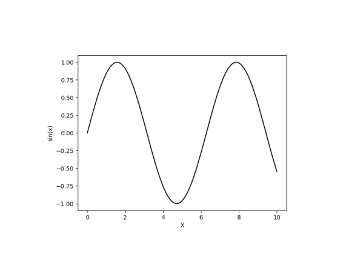
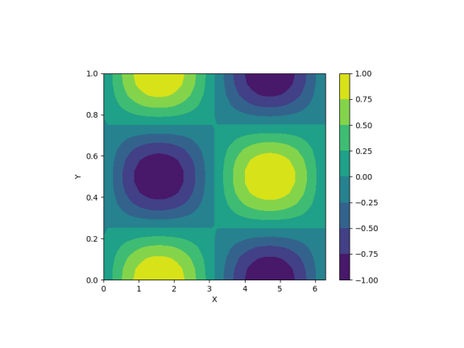

Plotting Utilities (dephycf.plotbasics)#
This page documents the plotting utilities provided in
dephycf.plotbasics.
These functions are wrappers around Matplotlib that simplify the creation of line and contour plots for DEPHY-CF case analysis.
Examples#
1D Line Plot#
import numpy as np
from dephycf import plotting
x = np.linspace(0, 10, 100)
y = np.sin(x)
plotting.plot(x, y, name="line_plot.png", xlabel="X", ylabel="sin(x)")
This creates and saves a simple line plot line_plot.png, which is displayed below.
(Source code, png, pdf)
{kind=link}

2D Contour Plot#
import numpy as np
from dephycf import plotting
x = np.linspace(0, 2*np.pi, 50)
y = np.linspace(0, 1, 20)
X, Y = np.meshgrid(x, y, indexing="ij")
Z = np.sin(X) * np.cos(2*np.pi*Y)
plotting.plot2D(x, y, Z, name="contour_plot.png",
xlabel="X", ylabel="Y")
This creates and saves a filled contour plot contour_plot.png, which is displayed below.
(Source code, png, pdf)
{kind=link}

Module API#
Basic plotting functions using matplotlib.
This module provides basic functions to generate simple 1D and 2D plots and save them as image files.
- plot(x, y, x2=None, y2=None, xlim=None, ylim=None, xlabel=None, ylabel=None, title=None, rep_images=None, name=None, label='', label2='', yunits=None)[source]#
Create and save a 1D line plot.
- Parameters:
x (array-like) – X-axis values for the first curve.
y (array-like) – Y-axis values for the first curve.
x2 (array-like, optional) – X-axis values for the second curve (if any).
y2 (array-like, optional) – Y-axis values for the second curve (if any).
xlim (
tuple, optional) – Limits for the x-axis, e.g., (xmin, xmax).ylim (
tuple, optional) – Limits for the y-axis, e.g., (ymin, ymax).xlabel (
str, optional) – Label for the x-axis.ylabel (
str, optional) – Label for the y-axis.title (
str, optional) – Title of the plot.rep_images (
str, optional) – Directory where the image should be saved. Default is None, and in this case, the current working directory is used.name (
str) – File name of the output image (e.g., “plot.png”).label (
str, optional) – Legend label for the first curve defined by x and y..label2 (
str, optional) – Legend label for the second curve (if any), as defined by x2 and y2.yunits (
str, optional) – Units for the y-axis. If ‘hPa’ or ‘Pa’, the y-axis is inverted.
- Returns:
The plot is saved to disk as an image file.
- Return type:
None
- plot2D(x, y, z, xlim=None, ylim=None, xlabel=None, ylabel=None, title=None, rep_images=None, name=None, yunits=None)[source]#
Create and save a 2D contour plot.
- Parameters:
x (array-like) – Values along the x-axis (e.g., time).
y (array-like) – Values along the y-axis (e.g., height).
z (2D array-like) – Values to plot (shape must be (nt, nz)).
xlim (
tuple, optional) – Limits for the x-axis, e.g., (xmin, xmax).ylim (
tuple, optional) – Limits for the y-axis, e.g., (ymin, ymax).xlabel (
str, optional) – Label for the x-axis.ylabel (
str, optional) – Label for the y-axis.title (
str, optional) – Title of the plot.rep_images (
str, optional) – Directory where the image should be saved. Default is None, and in this case the current working directory is used.name (
str) – File name of the output image (e.g., “plot2d.png”).yunits (
str, optional) – Units for the y-axis. If ‘hPa’ or ‘Pa’, the y-axis is inverted.
- Returns:
The plot is saved to disk as an image file.
- Return type:
None